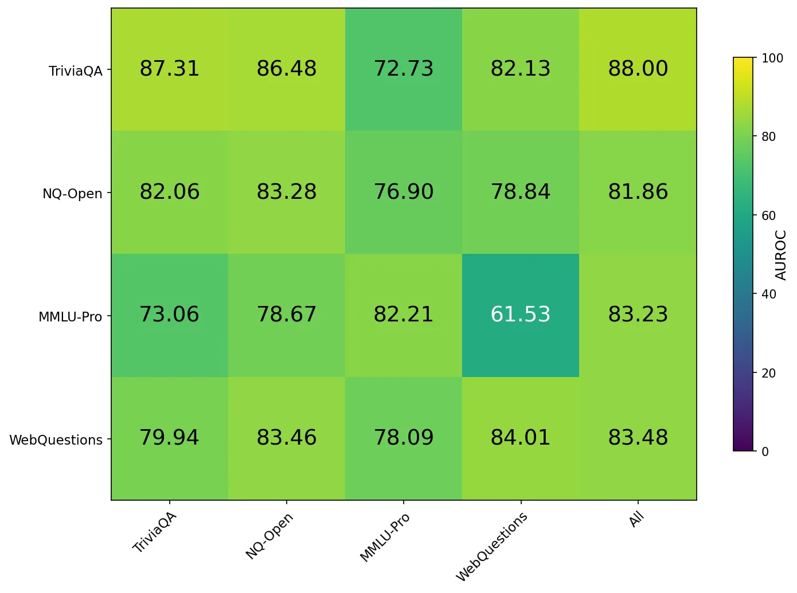
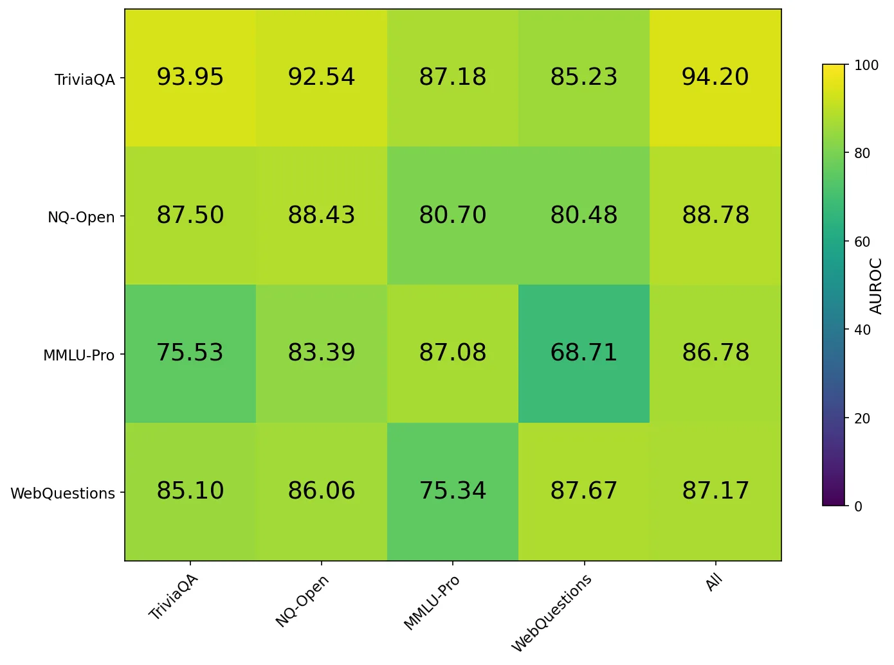

DRIFT checks hallucination risk while generation is already running, then routes uncertain queries to stronger verification.
DRIFT checks hallucination risk while generation is already running, then routes uncertain queries to stronger verification.
DRIFT is a lie detector for LLMs that reads the model before it speaks. It watches intermediate hidden states and predicts hallucination risk while the answer is already being generated.
The detector costs less than 0.1% of the computation needed to generate one token. That makes it fast enough for a router: confident questions return immediately, and risky questions go to a stronger verification path.
Final-layer representations have already been squeezed toward the next token. DRIFT looks earlier, where the model still carries richer confidence signals. The paper turns that signal into a lightweight probe and lets the probe run in parallel with generation.
The design changes the timing of hallucination detection. Before the answer is finished, the router can already decide whether the default model deserves trust.
DRIFT and GA-ICL attack the same reliability problem from opposite sides. DRIFT reads risk while the answer is being written; GA-ICL chooses more diagnostic evidence before the prompt is even formed.
The main result is clear. Across four QA benchmarks and three model families, DRIFT reaches SOTA AUROC in 10 of 12 settings, posts gains up to 13 points, and keeps working under dataset shift.
| Signal | Headline number |
|---|---|
| Compute overhead | < 0.1% of one-token generation cost |
| Benchmarks | 4 QA benchmarks |
| Model families | 3 LLM families |
| SOTA reach | 10 of 12 settings |
| Largest gain | Up to 13 AUROC points |

Out-of-distribution results on general QA benchmarks.

Out-of-distribution results on QA transfer settings.
Summary of hallucination detection methods.
| Method | Sampling | Features Used | Q/A Features Used |
|---|---|---|---|
| Perplexity | No Need | Output Logits | Answer |
| Semantic Entropy | Need | Output | Answer |
| Lexical Similarity | Need | Output | Answer |
| SelfcheckGPT | Need | Output | Answer |
| EigenScore | Need | Middle Hidden States | Answer |
| P(I Know) | No Need | Last Hidden State | Question |
| True Direction | No Need | Last Hidden State | Answer |
| HaloScope | No Need | Middle Hidden States | Answer |
| HARP | No Need | Last Hidden State | Answer |
| Ours | No Need | Middle Hidden States | Question/Answer |